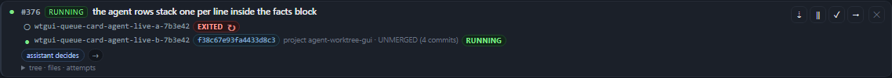
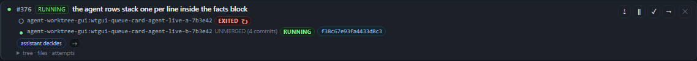

Two rects per card, read by getBoundingClientRect() in the page: the session status chip
(span.pill.pill-running, word "running") and the blue run chip (span.as-task-agent-run). The claim is
run.left > pill.right. The gap is the 4 px row gap. Same numbers in both panes, because the order is DOM
order and not a width-dependent CSS order.
| Card | Session chip (left-right) | Run chip (left-right) | Gap | run.left > pill.right |
|---|---|---|---|---|
| Before, 1160 px | 599.59 - 657.09 | 256.94 - 368.19 | -400.16 | no |
| After, 1160 px | 467.84 - 525.34 | 529.34 - 640.59 | +4.00 | yes |
| Before, 420 px | 213.50 - 271.00 | 75.56 - 186.81 | -195.44 | no |
| After, 420 px | 98.25 - 155.75 | 159.75 - 271.00 | +4.00 | yes |
Both chips sit on the same line in every case (row 524.38 - 540.14 px from the page top at 1160 px). The run chip is also the
row's last element (el.lastElementChild === runEl), so nothing can be drawn after the run id.
| Row | Reads |
|---|---|
| Before, live agent | ● wtgui-queue-card-agent-live-b-7b3e42 f38c67e93fa4433d8c3 project agent-worktree-gui · UNMERGED (4 commits) running |
| After, live agent | ● agent-worktree-gui:wtgui-queue-card-agent-live-b-7b3e42 UNMERGED (4 commits) running f38c67e93fa4433d8c3 |
| After, earlier agent | ○ agent-worktree-gui:wtgui-queue-card-agent-live-a-7b3e42 exited ↻ |
| After, a second project | ● poc-guidelines:wtgui-queue-card-agent-prov-b-7b3e42 MERGED (3 commits) · PR #373 open running |
The project is read once, first. No agent row in any of the six fixtures carries a project fragment
(the gate checks /\bproject\s/i over every row's text).
| Site | Change |
|---|---|
public/queue-cards.js:468 | queueAgentWhere no longer pushes project ${where.project}. The sentence keeps the landing verdict and the PR, and returns nothing when the tree had no verdict to give. |
public/queue-cards.js:495-496 | The line's label is project:thread. The thread's own recorded tree wins (where.project), because two agents on one card can be in two projects; a thread the queue never recorded a tree for falls back to the task's own project (queueProjectName). With no project anywhere the line keeps its bare thread rather than guessing. |
public/queue-cards.js:530-536 | The row's DOM order is now mark, project:branch, run title, landing, session chip, run chip. The run chip markup was moved, not duplicated. The code element also carries the whole label in title=, because the element still truncates. |
public/queue.css:88-94 | The queue pane's thread cap goes 210 px to 320 px: the label now holds the project as well, and at 210 px the branch was cut to a dozen characters. The code still truncates with its own ellipsis. |
tools/verify-queue-agents.mjs:456 | The browser gate gained the #410 block: text and rects on a card that names a live run, at 1160 and 420 px, plus a sweep over every full card for the project: shape and the absent fragment. |
test/assistant-queue-ui.test.js:477 | A DOM-order test over the sliced renderer: the first text of each line, the sentence, and the run chip as the row's last element. |
node tools/verify-queue-agents.mjs ... #410 rects (1160 px): session chip 467.84-525.34, run chip 529.34-640.59, gap 4 px, both on top 524.38; row text "● agent-worktree-gui:wtgui-queue-card-agent-live-b-7b3e42 UNMERGED (4 commits) running f38c67e93fa4433d8c3" #410 rects (420 px): session chip 98.25-155.75, run chip 159.75-271, gap 4 px 71/71 checks passed
Against a git archive of the base commit, with the same gate and the same fixtures, the #410 checks fail exactly
as the reader saw them (59/71):
FAIL #410: both lines match ^agent-worktree-gui: ["wtgui-...-live-a", "wtgui-...-live-b"]
FAIL #410: no `project ` fragment is left on an agent row "... f38c67e93fa4433d8c3 project agent-worktree-gui · UNMERGED (4 commits) running"
FAIL #410: the run chip's left edge is past the session chip's right edge run left 256.94 > chip right 657.09
FAIL #410: the run chip is the row's last element not last
#410 rects (1160 px): session chip 599.59-657.09, run chip 256.94-368.19, gap -400.16 px
59/71 checks passed
The ledger of every box is beside the pictures: after.json and before.json in this folder.
The shots are the gate's own --shots output, one PNG per fixture.
public/style.css, and this gate still read that file by name,
so it crashed with ENOENT on the base commit before it could measure anything. It now reads the sheet list out of
public/index.html in link order, the same read test/style-sheets.js makes. Without that, no #410
claim could be measured at all.